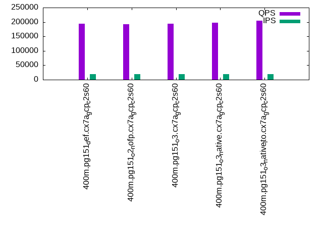

This is a report for the insert benchmark with 400M docs and 20 client(s). It is generated by scripts (bash, awk, sed) and Tufte might not be impressed. An overview of the insert benchmark is here and a short update is here. Below, by DBMS, I mean DBMS+version.config. An example is my8020.c10b40 where my means MySQL, 8020 is version 8.0.20 and c10b40 is the name for the configuration file.
The test server is c2-standard-60 from GCP with 30 cores, hyperthreads disabled, 240G RAM and 3T of NVMe (XFS with RAID0 over 8 devices). The benchmark was run with 20 clients and there were 1 or 2 connections per client (1 for queries, 1 for inserts). It uses 20 tables with a client per table. It loads 20M rows per table without secondary indexes, creates secondary indexes, loads another 20M rows per table then does 3 read+write tests for one hour each that do queries as fast as possible with 100, 500 and then 1000 writes/second/client concurrent with the queries. The database is cached by the storage engine and the only IO is for writes. Clients and the DBMS share one server. The per-database configs are in the per-database subdirectories here.
The tested DBMS are:
The numbers are inserts/s for l.i0 and l.i1, indexed docs (or rows) /s for l.x and queries/s for q*.2. The values are the average rate over the entire test for inserts (IPS) and queries (QPS). The range of values for IPS and QPS is split into 3 parts: bottom 25%, middle 50%, top 25%. Values in the bottom 25% have a red background, values in the top 25% have a green background and values in the middle have no color. A gray background is used for values that can be ignored because the DBMS did not sustain the target insert rate. Red backgrounds are not used when the minimum value is within 80% of the max value.
| dbms | l.i0 | l.x | l.i1 | q100.1 | q500.1 | q1000.1 |
|---|---|---|---|---|---|---|
| 400m.pg151_def.cx7a_gcp_c2s60 | 1379310 | 2778472 | 417973 | 189206 | 191359 | 194148 |
| 400m.pg151_o2_nofp.cx7a_gcp_c2s60 | 1360544 | 2740411 | 414079 | 186923 | 189093 | 192099 |
| 400m.pg151_o3.cx7a_gcp_c2s60 | 1388889 | 2759310 | 415369 | 189346 | 191050 | 194306 |
| 400m.pg151_o3_native.cx7a_gcp_c2s60 | 1346801 | 2797902 | 406091 | 192452 | 193368 | 197769 |
| 400m.pg151_o3_native_lto.cx7a_gcp_c2s60 | 1393728 | 2778472 | 416233 | 197942 | 200354 | 203691 |
This table has relative throughput, throughput for the DBMS relative to the DBMS in the first line, using the absolute throughput from the previous table.
| dbms | l.i0 | l.x | l.i1 | q100.1 | q500.1 | q1000.1 |
|---|---|---|---|---|---|---|
| 400m.pg151_def.cx7a_gcp_c2s60 | 1.00 | 1.00 | 1.00 | 1.00 | 1.00 | 1.00 |
| 400m.pg151_o2_nofp.cx7a_gcp_c2s60 | 0.99 | 0.99 | 0.99 | 0.99 | 0.99 | 0.99 |
| 400m.pg151_o3.cx7a_gcp_c2s60 | 1.01 | 0.99 | 0.99 | 1.00 | 1.00 | 1.00 |
| 400m.pg151_o3_native.cx7a_gcp_c2s60 | 0.98 | 1.01 | 0.97 | 1.02 | 1.01 | 1.02 |
| 400m.pg151_o3_native_lto.cx7a_gcp_c2s60 | 1.01 | 1.00 | 1.00 | 1.05 | 1.05 | 1.05 |
This lists the average rate of inserts/s for the tests that do inserts concurrent with queries. For such tests the query rate is listed in the table above. The read+write tests are setup so that the insert rate should match the target rate every second. Cells that are not at least 95% of the target have a red background to indicate a failure to satisfy the target.
| dbms | q100.1 | q500.1 | q1000.1 |
|---|---|---|---|
| pg151_def.cx7a_gcp_c2s60 | 1976 | 9885 | 19769 |
| pg151_o2_nofp.cx7a_gcp_c2s60 | 1976 | 9885 | 19769 |
| pg151_o3.cx7a_gcp_c2s60 | 1976 | 9885 | 19769 |
| pg151_o3_native.cx7a_gcp_c2s60 | 1976 | 9885 | 19769 |
| pg151_o3_native_lto.cx7a_gcp_c2s60 | 1976 | 9885 | 19769 |
| target | 2000 | 10000 | 20000 |
l.i0: load without secondary indexes. Graphs for performance per 1-second interval are here.
Average throughput:
Insert response time histogram: each cell has the percentage of responses that take <= the time in the header and max is the max response time in seconds. For the max column values in the top 25% of the range have a red background and in the bottom 25% of the range have a green background. The red background is not used when the min value is within 80% of the max value.
| dbms | 256us | 1ms | 4ms | 16ms | 64ms | 256ms | 1s | 4s | 16s | gt | max |
|---|---|---|---|---|---|---|---|---|---|---|---|
| pg151_def.cx7a_gcp_c2s60 | 59.201 | 39.831 | 0.914 | 0.026 | 0.021 | 0.008 | 0.710 | ||||
| pg151_o2_nofp.cx7a_gcp_c2s60 | 57.818 | 41.213 | 0.918 | 0.019 | 0.024 | 0.009 | 0.632 | ||||
| pg151_o3.cx7a_gcp_c2s60 | 59.411 | 39.646 | 0.895 | 0.018 | 0.022 | 0.008 | 0.592 | ||||
| pg151_o3_native.cx7a_gcp_c2s60 | 55.631 | 43.448 | 0.868 | 0.023 | 0.022 | 0.009 | 0.921 | ||||
| pg151_o3_native_lto.cx7a_gcp_c2s60 | 57.634 | 41.520 | 0.796 | 0.022 | 0.019 | 0.009 | 0.001 | 1.104 |
Performance metrics for the DBMS listed above. Some are normalized by throughput, others are not. Legend for results is here.
ips qps rps rmbps wps wmbps rpq rkbpq wpi wkbpi csps cpups cspq cpupq dbgb1 dbgb2 rss maxop p50 p99 tag 1379310 0 0 0.0 1753.1 464.4 0.000 0.000 0.001 0.345 225502 60.7 0.163 13 38.3 103.4 0.0 0.710 76980 23774 400m.pg151_def.cx7a_gcp_c2s60 1360544 0 0 0.0 1777.3 460.6 0.000 0.000 0.001 0.347 229241 60.6 0.168 13 38.3 103.6 NA 0.632 76346 21576 400m.pg151_o2_nofp.cx7a_gcp_c2s60 1388889 0 0 0.0 1806.6 472.2 0.000 0.000 0.001 0.348 229343 61.0 0.165 13 38.3 103.4 0.0 0.592 78114 24772 400m.pg151_o3.cx7a_gcp_c2s60 1346801 0 0 0.0 1790.5 460.8 0.000 0.000 0.001 0.350 259753 59.7 0.193 13 38.3 104.1 NA 0.921 75418 20480 400m.pg151_o3_native.cx7a_gcp_c2s60 1393728 0 0 0.0 1787.3 468.2 0.000 0.000 0.001 0.344 257420 60.1 0.185 13 38.3 103.4 0.0 1.104 77915 19286 400m.pg151_o3_native_lto.cx7a_gcp_c2s60
l.x: create secondary indexes.
Average throughput:
Performance metrics for the DBMS listed above. Some are normalized by throughput, others are not. Legend for results is here.
ips qps rps rmbps wps wmbps rpq rkbpq wpi wkbpi csps cpups cspq cpupq dbgb1 dbgb2 rss maxop p50 p99 tag 2778472 0 0 0.0 3150.2 831.0 0.000 0.000 0.001 0.306 110931 27.0 0.040 3 73.5 172.1 0.0 0.092 NA NA 400m.pg151_def.cx7a_gcp_c2s60 2740411 0 0 0.0 3137.4 822.6 0.000 0.000 0.001 0.307 110036 26.5 0.040 3 73.5 172.9 0.0 0.119 NA NA 400m.pg151_o2_nofp.cx7a_gcp_c2s60 2759310 0 0 0.0 3105.6 806.8 0.000 0.000 0.001 0.299 107887 26.3 0.039 3 73.5 171.6 0.0 0.092 NA NA 400m.pg151_o3.cx7a_gcp_c2s60 2797902 0 0 0.0 3122.9 826.4 0.000 0.000 0.001 0.302 111720 26.4 0.040 3 73.5 173.2 0.0 0.039 NA NA 400m.pg151_o3_native.cx7a_gcp_c2s60 2778472 0 0 0.0 3129.8 810.7 0.000 0.000 0.001 0.299 110496 26.0 0.040 3 73.5 171.7 0.0 0.175 NA NA 400m.pg151_o3_native_lto.cx7a_gcp_c2s60
l.i1: continue load after secondary indexes created. Graphs for performance per 1-second interval are here.
Average throughput:
Insert response time histogram: each cell has the percentage of responses that take <= the time in the header and max is the max response time in seconds. For the max column values in the top 25% of the range have a red background and in the bottom 25% of the range have a green background. The red background is not used when the min value is within 80% of the max value.
| dbms | 256us | 1ms | 4ms | 16ms | 64ms | 256ms | 1s | 4s | 16s | gt | max |
|---|---|---|---|---|---|---|---|---|---|---|---|
| pg151_def.cx7a_gcp_c2s60 | nonzero | 96.375 | 2.520 | 1.059 | 0.028 | 0.018 | nonzero | 1.119 | |||
| pg151_o2_nofp.cx7a_gcp_c2s60 | 96.420 | 2.459 | 1.074 | 0.034 | 0.013 | nonzero | 1.050 | ||||
| pg151_o3.cx7a_gcp_c2s60 | nonzero | 96.301 | 2.542 | 1.112 | 0.033 | 0.012 | nonzero | 1.153 | |||
| pg151_o3_native.cx7a_gcp_c2s60 | nonzero | 96.216 | 2.639 | 1.095 | 0.037 | 0.012 | nonzero | 1.042 | |||
| pg151_o3_native_lto.cx7a_gcp_c2s60 | 0.003 | 96.248 | 2.610 | 1.092 | 0.036 | 0.011 | nonzero | 1.045 |
Performance metrics for the DBMS listed above. Some are normalized by throughput, others are not. Legend for results is here.
ips qps rps rmbps wps wmbps rpq rkbpq wpi wkbpi csps cpups cspq cpupq dbgb1 dbgb2 rss maxop p50 p99 tag 417973 0 2428 16.1 4686.7 541.6 0.006 0.040 0.011 1.327 283378 53.6 0.678 38 163.3 347.0 NA 1.119 25872 1998 400m.pg151_def.cx7a_gcp_c2s60 414079 0 2279 16.0 4700.2 536.3 0.006 0.040 0.011 1.326 268674 54.4 0.649 39 163.3 347.9 0.0 1.050 25572 2049 400m.pg151_o2_nofp.cx7a_gcp_c2s60 415369 0 2297 17.0 4759.2 547.3 0.006 0.042 0.011 1.349 289812 53.5 0.698 39 163.3 347.7 NA 1.153 25772 1948 400m.pg151_o3.cx7a_gcp_c2s60 406091 0 2516 15.9 4959.8 536.1 0.006 0.040 0.012 1.352 331435 52.8 0.816 39 163.3 348.1 0.0 1.042 25022 1748 400m.pg151_o3_native.cx7a_gcp_c2s60 416233 0 2745 16.6 4710.3 546.7 0.007 0.041 0.011 1.345 313216 52.4 0.753 38 163.3 348.6 0.0 1.045 25871 2198 400m.pg151_o3_native_lto.cx7a_gcp_c2s60
q100.1: range queries with 100 insert/s per client. Graphs for performance per 1-second interval are here.
Average throughput:
Query response time histogram: each cell has the percentage of responses that take <= the time in the header and max is the max response time in seconds. For max values in the top 25% of the range have a red background and in the bottom 25% of the range have a green background. The red background is not used when the min value is within 80% of the max value.
| dbms | 256us | 1ms | 4ms | 16ms | 64ms | 256ms | 1s | 4s | 16s | gt | max |
|---|---|---|---|---|---|---|---|---|---|---|---|
| pg151_def.cx7a_gcp_c2s60 | 99.905 | 0.088 | 0.006 | 0.001 | nonzero | 0.027 | |||||
| pg151_o2_nofp.cx7a_gcp_c2s60 | 99.901 | 0.091 | 0.006 | 0.001 | nonzero | 0.026 | |||||
| pg151_o3.cx7a_gcp_c2s60 | 99.905 | 0.087 | 0.006 | 0.001 | nonzero | nonzero | 0.074 | ||||
| pg151_o3_native.cx7a_gcp_c2s60 | 99.909 | 0.083 | 0.006 | 0.001 | nonzero | 0.027 | |||||
| pg151_o3_native_lto.cx7a_gcp_c2s60 | 99.917 | 0.076 | 0.006 | 0.001 | nonzero | nonzero | 0.201 |
Insert response time histogram: each cell has the percentage of responses that take <= the time in the header and max is the max response time in seconds. For max values in the top 25% of the range have a red background and in the bottom 25% of the range have a green background. The red background is not used when the min value is within 80% of the max value.
| dbms | 256us | 1ms | 4ms | 16ms | 64ms | 256ms | 1s | 4s | 16s | gt | max |
|---|---|---|---|---|---|---|---|---|---|---|---|
| pg151_def.cx7a_gcp_c2s60 | 95.414 | 3.919 | 0.651 | 0.015 | 0.131 | ||||||
| pg151_o2_nofp.cx7a_gcp_c2s60 | 95.415 | 3.740 | 0.819 | 0.025 | 0.197 | ||||||
| pg151_o3.cx7a_gcp_c2s60 | 93.342 | 5.244 | 1.382 | 0.017 | 0.015 | 0.305 | |||||
| pg151_o3_native.cx7a_gcp_c2s60 | 92.468 | 5.847 | 1.685 | 0.059 | |||||||
| pg151_o3_native_lto.cx7a_gcp_c2s60 | 95.233 | 4.078 | 0.689 | 0.036 |
Performance metrics for the DBMS listed above. Some are normalized by throughput, others are not. Legend for results is here.
ips qps rps rmbps wps wmbps rpq rkbpq wpi wkbpi csps cpups cspq cpupq dbgb1 dbgb2 rss maxop p50 p99 tag 1976 189206 170 1.6 3453.6 82.2 0.001 0.009 1.748 42.610 673627 62.6 3.560 99 163.9 318.2 0.0 0.027 9445 9046 400m.pg151_def.cx7a_gcp_c2s60 1976 186923 165 1.5 3465.4 81.5 0.001 0.008 1.754 42.227 667522 63.0 3.571 101 163.9 320.3 0.0 0.026 9321 8949 400m.pg151_o2_nofp.cx7a_gcp_c2s60 1976 189346 164 1.6 3460.2 82.8 0.001 0.008 1.751 42.930 675923 62.7 3.570 99 163.9 321.4 0.0 0.074 9398 9046 400m.pg151_o3.cx7a_gcp_c2s60 1976 192452 160 1.4 3420.1 82.7 0.001 0.008 1.731 42.868 685853 62.7 3.564 98 163.9 311.9 0.0 0.027 9525 9158 400m.pg151_o3_native.cx7a_gcp_c2s60 1976 197942 168 1.6 3460.3 82.0 0.001 0.008 1.751 42.479 704632 63.0 3.560 95 163.9 320.1 0.0 0.201 9797 9414 400m.pg151_o3_native_lto.cx7a_gcp_c2s60
q500.1: range queries with 500 insert/s per client. Graphs for performance per 1-second interval are here.
Average throughput:
Query response time histogram: each cell has the percentage of responses that take <= the time in the header and max is the max response time in seconds. For max values in the top 25% of the range have a red background and in the bottom 25% of the range have a green background. The red background is not used when the min value is within 80% of the max value.
| dbms | 256us | 1ms | 4ms | 16ms | 64ms | 256ms | 1s | 4s | 16s | gt | max |
|---|---|---|---|---|---|---|---|---|---|---|---|
| pg151_def.cx7a_gcp_c2s60 | 99.904 | 0.063 | 0.029 | 0.004 | nonzero | 0.047 | |||||
| pg151_o2_nofp.cx7a_gcp_c2s60 | 99.899 | 0.067 | 0.030 | 0.004 | nonzero | 0.043 | |||||
| pg151_o3.cx7a_gcp_c2s60 | 99.901 | 0.066 | 0.029 | 0.004 | nonzero | 0.052 | |||||
| pg151_o3_native.cx7a_gcp_c2s60 | 99.905 | 0.062 | 0.029 | 0.004 | nonzero | nonzero | 0.069 | ||||
| pg151_o3_native_lto.cx7a_gcp_c2s60 | 99.912 | 0.056 | 0.028 | 0.004 | nonzero | 0.049 |
Insert response time histogram: each cell has the percentage of responses that take <= the time in the header and max is the max response time in seconds. For max values in the top 25% of the range have a red background and in the bottom 25% of the range have a green background. The red background is not used when the min value is within 80% of the max value.
| dbms | 256us | 1ms | 4ms | 16ms | 64ms | 256ms | 1s | 4s | 16s | gt | max |
|---|---|---|---|---|---|---|---|---|---|---|---|
| pg151_def.cx7a_gcp_c2s60 | 44.712 | 25.267 | 28.882 | 1.139 | 0.233 | ||||||
| pg151_o2_nofp.cx7a_gcp_c2s60 | 44.531 | 25.522 | 28.791 | 1.156 | nonzero | 0.273 | |||||
| pg151_o3.cx7a_gcp_c2s60 | 44.551 | 25.048 | 29.167 | 1.229 | 0.006 | 0.485 | |||||
| pg151_o3_native.cx7a_gcp_c2s60 | 45.206 | 25.333 | 28.340 | 1.121 | 0.172 | ||||||
| pg151_o3_native_lto.cx7a_gcp_c2s60 | 45.118 | 24.665 | 28.994 | 1.223 | 0.230 |
Performance metrics for the DBMS listed above. Some are normalized by throughput, others are not. Legend for results is here.
ips qps rps rmbps wps wmbps rpq rkbpq wpi wkbpi csps cpups cspq cpupq dbgb1 dbgb2 rss maxop p50 p99 tag 9885 191359 2 0.0 6397.3 194.3 0.000 0.000 0.647 20.126 668864 64.0 3.495 100 167.4 274.2 0.0 0.047 9398 8906 400m.pg151_def.cx7a_gcp_c2s60 9885 189093 6 0.1 6335.0 192.4 0.000 0.000 0.641 19.933 660874 63.9 3.495 101 167.5 271.6 0.0 0.043 9462 8998 400m.pg151_o2_nofp.cx7a_gcp_c2s60 9885 191050 18 0.1 6394.4 195.0 0.000 0.001 0.647 20.204 668357 64.1 3.498 101 167.4 272.1 0.0 0.052 9477 8982 400m.pg151_o3.cx7a_gcp_c2s60 9885 193368 11 0.1 6137.0 189.5 0.000 0.000 0.621 19.634 676563 64.1 3.499 99 167.4 270.6 0.0 0.069 9557 9062 400m.pg151_o3_native.cx7a_gcp_c2s60 9885 200354 6 0.1 6400.4 194.1 0.000 0.000 0.648 20.103 698395 63.9 3.486 96 167.4 274.9 0.0 0.049 9877 9350 400m.pg151_o3_native_lto.cx7a_gcp_c2s60
q1000.1: range queries with 1000 insert/s per client. Graphs for performance per 1-second interval are here.
Average throughput:
Query response time histogram: each cell has the percentage of responses that take <= the time in the header and max is the max response time in seconds. For max values in the top 25% of the range have a red background and in the bottom 25% of the range have a green background. The red background is not used when the min value is within 80% of the max value.
| dbms | 256us | 1ms | 4ms | 16ms | 64ms | 256ms | 1s | 4s | 16s | gt | max |
|---|---|---|---|---|---|---|---|---|---|---|---|
| pg151_def.cx7a_gcp_c2s60 | 99.837 | 0.111 | 0.044 | 0.007 | nonzero | nonzero | 0.075 | ||||
| pg151_o2_nofp.cx7a_gcp_c2s60 | 99.831 | 0.116 | 0.045 | 0.007 | nonzero | 0.044 | |||||
| pg151_o3.cx7a_gcp_c2s60 | 99.834 | 0.113 | 0.045 | 0.007 | nonzero | nonzero | 0.078 | ||||
| pg151_o3_native.cx7a_gcp_c2s60 | 99.839 | 0.109 | 0.044 | 0.007 | nonzero | nonzero | 0.145 | ||||
| pg151_o3_native_lto.cx7a_gcp_c2s60 | 99.850 | 0.101 | 0.042 | 0.007 | nonzero | 0.058 |
Insert response time histogram: each cell has the percentage of responses that take <= the time in the header and max is the max response time in seconds. For max values in the top 25% of the range have a red background and in the bottom 25% of the range have a green background. The red background is not used when the min value is within 80% of the max value.
| dbms | 256us | 1ms | 4ms | 16ms | 64ms | 256ms | 1s | 4s | 16s | gt | max |
|---|---|---|---|---|---|---|---|---|---|---|---|
| pg151_def.cx7a_gcp_c2s60 | 57.336 | 22.654 | 19.230 | 0.780 | 0.217 | ||||||
| pg151_o2_nofp.cx7a_gcp_c2s60 | 57.521 | 23.286 | 18.441 | 0.751 | 0.211 | ||||||
| pg151_o3.cx7a_gcp_c2s60 | 57.302 | 22.813 | 19.041 | 0.845 | 0.210 | ||||||
| pg151_o3_native.cx7a_gcp_c2s60 | 56.685 | 23.197 | 19.285 | 0.834 | 0.210 | ||||||
| pg151_o3_native_lto.cx7a_gcp_c2s60 | 57.634 | 22.750 | 18.822 | 0.794 | 0.199 |
Performance metrics for the DBMS listed above. Some are normalized by throughput, others are not. Legend for results is here.
ips qps rps rmbps wps wmbps rpq rkbpq wpi wkbpi csps cpups cspq cpupq dbgb1 dbgb2 rss maxop p50 p99 tag 19769 194148 52 0.4 6294.3 264.3 0.000 0.002 0.318 13.693 659049 65.1 3.395 101 179.6 280.0 0.0 0.075 9669 8842 400m.pg151_def.cx7a_gcp_c2s60 19769 192099 53 0.4 6302.3 264.2 0.000 0.002 0.319 13.685 650902 65.3 3.388 102 179.6 280.3 0.0 0.044 9546 8701 400m.pg151_o2_nofp.cx7a_gcp_c2s60 19769 194306 76 0.6 6291.9 263.1 0.000 0.003 0.318 13.627 659582 65.1 3.395 101 179.6 280.7 0.0 0.078 9674 8859 400m.pg151_o3.cx7a_gcp_c2s60 19769 197769 69 0.5 6347.5 268.9 0.000 0.003 0.321 13.927 671159 65.2 3.394 99 179.6 279.6 0.0 0.145 9909 9014 400m.pg151_o3_native.cx7a_gcp_c2s60 19769 203691 63 0.5 6290.9 263.1 0.000 0.002 0.318 13.627 690673 65.2 3.391 96 179.6 280.4 0.0 0.058 10053 9163 400m.pg151_o3_native_lto.cx7a_gcp_c2s60
l.i0: load without secondary indexes
Performance metrics for all DBMS, not just the ones listed above. Some are normalized by throughput, others are not. Legend for results is here.
ips qps rps rmbps wps wmbps rpq rkbpq wpi wkbpi csps cpups cspq cpupq dbgb1 dbgb2 rss maxop p50 p99 tag 1379310 0 0 0.0 1753.1 464.4 0.000 0.000 0.001 0.345 225502 60.7 0.163 13 38.3 103.4 0.0 0.710 76980 23774 400m.pg151_def.cx7a_gcp_c2s60 1360544 0 0 0.0 1777.3 460.6 0.000 0.000 0.001 0.347 229241 60.6 0.168 13 38.3 103.6 NA 0.632 76346 21576 400m.pg151_o2_nofp.cx7a_gcp_c2s60 1388889 0 0 0.0 1806.6 472.2 0.000 0.000 0.001 0.348 229343 61.0 0.165 13 38.3 103.4 0.0 0.592 78114 24772 400m.pg151_o3.cx7a_gcp_c2s60 1346801 0 0 0.0 1790.5 460.8 0.000 0.000 0.001 0.350 259753 59.7 0.193 13 38.3 104.1 NA 0.921 75418 20480 400m.pg151_o3_native.cx7a_gcp_c2s60 1393728 0 0 0.0 1787.3 468.2 0.000 0.000 0.001 0.344 257420 60.1 0.185 13 38.3 103.4 0.0 1.104 77915 19286 400m.pg151_o3_native_lto.cx7a_gcp_c2s60
l.x: create secondary indexes
Performance metrics for all DBMS, not just the ones listed above. Some are normalized by throughput, others are not. Legend for results is here.
ips qps rps rmbps wps wmbps rpq rkbpq wpi wkbpi csps cpups cspq cpupq dbgb1 dbgb2 rss maxop p50 p99 tag 2778472 0 0 0.0 3150.2 831.0 0.000 0.000 0.001 0.306 110931 27.0 0.040 3 73.5 172.1 0.0 0.092 NA NA 400m.pg151_def.cx7a_gcp_c2s60 2740411 0 0 0.0 3137.4 822.6 0.000 0.000 0.001 0.307 110036 26.5 0.040 3 73.5 172.9 0.0 0.119 NA NA 400m.pg151_o2_nofp.cx7a_gcp_c2s60 2759310 0 0 0.0 3105.6 806.8 0.000 0.000 0.001 0.299 107887 26.3 0.039 3 73.5 171.6 0.0 0.092 NA NA 400m.pg151_o3.cx7a_gcp_c2s60 2797902 0 0 0.0 3122.9 826.4 0.000 0.000 0.001 0.302 111720 26.4 0.040 3 73.5 173.2 0.0 0.039 NA NA 400m.pg151_o3_native.cx7a_gcp_c2s60 2778472 0 0 0.0 3129.8 810.7 0.000 0.000 0.001 0.299 110496 26.0 0.040 3 73.5 171.7 0.0 0.175 NA NA 400m.pg151_o3_native_lto.cx7a_gcp_c2s60
l.i1: continue load after secondary indexes created
Performance metrics for all DBMS, not just the ones listed above. Some are normalized by throughput, others are not. Legend for results is here.
ips qps rps rmbps wps wmbps rpq rkbpq wpi wkbpi csps cpups cspq cpupq dbgb1 dbgb2 rss maxop p50 p99 tag 417973 0 2428 16.1 4686.7 541.6 0.006 0.040 0.011 1.327 283378 53.6 0.678 38 163.3 347.0 NA 1.119 25872 1998 400m.pg151_def.cx7a_gcp_c2s60 414079 0 2279 16.0 4700.2 536.3 0.006 0.040 0.011 1.326 268674 54.4 0.649 39 163.3 347.9 0.0 1.050 25572 2049 400m.pg151_o2_nofp.cx7a_gcp_c2s60 415369 0 2297 17.0 4759.2 547.3 0.006 0.042 0.011 1.349 289812 53.5 0.698 39 163.3 347.7 NA 1.153 25772 1948 400m.pg151_o3.cx7a_gcp_c2s60 406091 0 2516 15.9 4959.8 536.1 0.006 0.040 0.012 1.352 331435 52.8 0.816 39 163.3 348.1 0.0 1.042 25022 1748 400m.pg151_o3_native.cx7a_gcp_c2s60 416233 0 2745 16.6 4710.3 546.7 0.007 0.041 0.011 1.345 313216 52.4 0.753 38 163.3 348.6 0.0 1.045 25871 2198 400m.pg151_o3_native_lto.cx7a_gcp_c2s60
q100.1: range queries with 100 insert/s per client
Performance metrics for all DBMS, not just the ones listed above. Some are normalized by throughput, others are not. Legend for results is here.
ips qps rps rmbps wps wmbps rpq rkbpq wpi wkbpi csps cpups cspq cpupq dbgb1 dbgb2 rss maxop p50 p99 tag 1976 189206 170 1.6 3453.6 82.2 0.001 0.009 1.748 42.610 673627 62.6 3.560 99 163.9 318.2 0.0 0.027 9445 9046 400m.pg151_def.cx7a_gcp_c2s60 1976 186923 165 1.5 3465.4 81.5 0.001 0.008 1.754 42.227 667522 63.0 3.571 101 163.9 320.3 0.0 0.026 9321 8949 400m.pg151_o2_nofp.cx7a_gcp_c2s60 1976 189346 164 1.6 3460.2 82.8 0.001 0.008 1.751 42.930 675923 62.7 3.570 99 163.9 321.4 0.0 0.074 9398 9046 400m.pg151_o3.cx7a_gcp_c2s60 1976 192452 160 1.4 3420.1 82.7 0.001 0.008 1.731 42.868 685853 62.7 3.564 98 163.9 311.9 0.0 0.027 9525 9158 400m.pg151_o3_native.cx7a_gcp_c2s60 1976 197942 168 1.6 3460.3 82.0 0.001 0.008 1.751 42.479 704632 63.0 3.560 95 163.9 320.1 0.0 0.201 9797 9414 400m.pg151_o3_native_lto.cx7a_gcp_c2s60
q500.1: range queries with 500 insert/s per client
Performance metrics for all DBMS, not just the ones listed above. Some are normalized by throughput, others are not. Legend for results is here.
ips qps rps rmbps wps wmbps rpq rkbpq wpi wkbpi csps cpups cspq cpupq dbgb1 dbgb2 rss maxop p50 p99 tag 9885 191359 2 0.0 6397.3 194.3 0.000 0.000 0.647 20.126 668864 64.0 3.495 100 167.4 274.2 0.0 0.047 9398 8906 400m.pg151_def.cx7a_gcp_c2s60 9885 189093 6 0.1 6335.0 192.4 0.000 0.000 0.641 19.933 660874 63.9 3.495 101 167.5 271.6 0.0 0.043 9462 8998 400m.pg151_o2_nofp.cx7a_gcp_c2s60 9885 191050 18 0.1 6394.4 195.0 0.000 0.001 0.647 20.204 668357 64.1 3.498 101 167.4 272.1 0.0 0.052 9477 8982 400m.pg151_o3.cx7a_gcp_c2s60 9885 193368 11 0.1 6137.0 189.5 0.000 0.000 0.621 19.634 676563 64.1 3.499 99 167.4 270.6 0.0 0.069 9557 9062 400m.pg151_o3_native.cx7a_gcp_c2s60 9885 200354 6 0.1 6400.4 194.1 0.000 0.000 0.648 20.103 698395 63.9 3.486 96 167.4 274.9 0.0 0.049 9877 9350 400m.pg151_o3_native_lto.cx7a_gcp_c2s60
q1000.1: range queries with 1000 insert/s per client
Performance metrics for all DBMS, not just the ones listed above. Some are normalized by throughput, others are not. Legend for results is here.
ips qps rps rmbps wps wmbps rpq rkbpq wpi wkbpi csps cpups cspq cpupq dbgb1 dbgb2 rss maxop p50 p99 tag 19769 194148 52 0.4 6294.3 264.3 0.000 0.002 0.318 13.693 659049 65.1 3.395 101 179.6 280.0 0.0 0.075 9669 8842 400m.pg151_def.cx7a_gcp_c2s60 19769 192099 53 0.4 6302.3 264.2 0.000 0.002 0.319 13.685 650902 65.3 3.388 102 179.6 280.3 0.0 0.044 9546 8701 400m.pg151_o2_nofp.cx7a_gcp_c2s60 19769 194306 76 0.6 6291.9 263.1 0.000 0.003 0.318 13.627 659582 65.1 3.395 101 179.6 280.7 0.0 0.078 9674 8859 400m.pg151_o3.cx7a_gcp_c2s60 19769 197769 69 0.5 6347.5 268.9 0.000 0.003 0.321 13.927 671159 65.2 3.394 99 179.6 279.6 0.0 0.145 9909 9014 400m.pg151_o3_native.cx7a_gcp_c2s60 19769 203691 63 0.5 6290.9 263.1 0.000 0.002 0.318 13.627 690673 65.2 3.391 96 179.6 280.4 0.0 0.058 10053 9163 400m.pg151_o3_native_lto.cx7a_gcp_c2s60
Insert response time histogram
256us 1ms 4ms 16ms 64ms 256ms 1s 4s 16s gt max tag 0.000 59.201 39.831 0.914 0.026 0.021 0.008 0.000 0.000 0.000 0.710 pg151_def.cx7a_gcp_c2s60 0.000 57.818 41.213 0.918 0.019 0.024 0.009 0.000 0.000 0.000 0.632 pg151_o2_nofp.cx7a_gcp_c2s60 0.000 59.411 39.646 0.895 0.018 0.022 0.008 0.000 0.000 0.000 0.592 pg151_o3.cx7a_gcp_c2s60 0.000 55.631 43.448 0.868 0.023 0.022 0.009 0.000 0.000 0.000 0.921 pg151_o3_native.cx7a_gcp_c2s60 0.000 57.634 41.520 0.796 0.022 0.019 0.009 0.001 0.000 0.000 1.104 pg151_o3_native_lto.cx7a_gcp_c2s60
TODO - determine whether there is data for create index response time
Insert response time histogram
256us 1ms 4ms 16ms 64ms 256ms 1s 4s 16s gt max tag 0.000 nonzero 96.375 2.520 1.059 0.028 0.018 nonzero 0.000 0.000 1.119 pg151_def.cx7a_gcp_c2s60 0.000 0.000 96.420 2.459 1.074 0.034 0.013 nonzero 0.000 0.000 1.050 pg151_o2_nofp.cx7a_gcp_c2s60 0.000 nonzero 96.301 2.542 1.112 0.033 0.012 nonzero 0.000 0.000 1.153 pg151_o3.cx7a_gcp_c2s60 0.000 nonzero 96.216 2.639 1.095 0.037 0.012 nonzero 0.000 0.000 1.042 pg151_o3_native.cx7a_gcp_c2s60 0.000 0.003 96.248 2.610 1.092 0.036 0.011 nonzero 0.000 0.000 1.045 pg151_o3_native_lto.cx7a_gcp_c2s60
Query response time histogram
256us 1ms 4ms 16ms 64ms 256ms 1s 4s 16s gt max tag 99.905 0.088 0.006 0.001 nonzero 0.000 0.000 0.000 0.000 0.000 0.027 pg151_def.cx7a_gcp_c2s60 99.901 0.091 0.006 0.001 nonzero 0.000 0.000 0.000 0.000 0.000 0.026 pg151_o2_nofp.cx7a_gcp_c2s60 99.905 0.087 0.006 0.001 nonzero nonzero 0.000 0.000 0.000 0.000 0.074 pg151_o3.cx7a_gcp_c2s60 99.909 0.083 0.006 0.001 nonzero 0.000 0.000 0.000 0.000 0.000 0.027 pg151_o3_native.cx7a_gcp_c2s60 99.917 0.076 0.006 0.001 nonzero nonzero 0.000 0.000 0.000 0.000 0.201 pg151_o3_native_lto.cx7a_gcp_c2s60
Insert response time histogram
256us 1ms 4ms 16ms 64ms 256ms 1s 4s 16s gt max tag 0.000 0.000 95.414 3.919 0.651 0.015 0.000 0.000 0.000 0.000 0.131 pg151_def.cx7a_gcp_c2s60 0.000 0.000 95.415 3.740 0.819 0.025 0.000 0.000 0.000 0.000 0.197 pg151_o2_nofp.cx7a_gcp_c2s60 0.000 0.000 93.342 5.244 1.382 0.017 0.015 0.000 0.000 0.000 0.305 pg151_o3.cx7a_gcp_c2s60 0.000 0.000 92.468 5.847 1.685 0.000 0.000 0.000 0.000 0.000 0.059 pg151_o3_native.cx7a_gcp_c2s60 0.000 0.000 95.233 4.078 0.689 0.000 0.000 0.000 0.000 0.000 0.036 pg151_o3_native_lto.cx7a_gcp_c2s60
Query response time histogram
256us 1ms 4ms 16ms 64ms 256ms 1s 4s 16s gt max tag 99.904 0.063 0.029 0.004 nonzero 0.000 0.000 0.000 0.000 0.000 0.047 pg151_def.cx7a_gcp_c2s60 99.899 0.067 0.030 0.004 nonzero 0.000 0.000 0.000 0.000 0.000 0.043 pg151_o2_nofp.cx7a_gcp_c2s60 99.901 0.066 0.029 0.004 nonzero 0.000 0.000 0.000 0.000 0.000 0.052 pg151_o3.cx7a_gcp_c2s60 99.905 0.062 0.029 0.004 nonzero nonzero 0.000 0.000 0.000 0.000 0.069 pg151_o3_native.cx7a_gcp_c2s60 99.912 0.056 0.028 0.004 nonzero 0.000 0.000 0.000 0.000 0.000 0.049 pg151_o3_native_lto.cx7a_gcp_c2s60
Insert response time histogram
256us 1ms 4ms 16ms 64ms 256ms 1s 4s 16s gt max tag 0.000 0.000 44.712 25.267 28.882 1.139 0.000 0.000 0.000 0.000 0.233 pg151_def.cx7a_gcp_c2s60 0.000 0.000 44.531 25.522 28.791 1.156 nonzero 0.000 0.000 0.000 0.273 pg151_o2_nofp.cx7a_gcp_c2s60 0.000 0.000 44.551 25.048 29.167 1.229 0.006 0.000 0.000 0.000 0.485 pg151_o3.cx7a_gcp_c2s60 0.000 0.000 45.206 25.333 28.340 1.121 0.000 0.000 0.000 0.000 0.172 pg151_o3_native.cx7a_gcp_c2s60 0.000 0.000 45.118 24.665 28.994 1.223 0.000 0.000 0.000 0.000 0.230 pg151_o3_native_lto.cx7a_gcp_c2s60
Query response time histogram
256us 1ms 4ms 16ms 64ms 256ms 1s 4s 16s gt max tag 99.837 0.111 0.044 0.007 nonzero nonzero 0.000 0.000 0.000 0.000 0.075 pg151_def.cx7a_gcp_c2s60 99.831 0.116 0.045 0.007 nonzero 0.000 0.000 0.000 0.000 0.000 0.044 pg151_o2_nofp.cx7a_gcp_c2s60 99.834 0.113 0.045 0.007 nonzero nonzero 0.000 0.000 0.000 0.000 0.078 pg151_o3.cx7a_gcp_c2s60 99.839 0.109 0.044 0.007 nonzero nonzero 0.000 0.000 0.000 0.000 0.145 pg151_o3_native.cx7a_gcp_c2s60 99.850 0.101 0.042 0.007 nonzero 0.000 0.000 0.000 0.000 0.000 0.058 pg151_o3_native_lto.cx7a_gcp_c2s60
Insert response time histogram
256us 1ms 4ms 16ms 64ms 256ms 1s 4s 16s gt max tag 0.000 0.000 57.336 22.654 19.230 0.780 0.000 0.000 0.000 0.000 0.217 pg151_def.cx7a_gcp_c2s60 0.000 0.000 57.521 23.286 18.441 0.751 0.000 0.000 0.000 0.000 0.211 pg151_o2_nofp.cx7a_gcp_c2s60 0.000 0.000 57.302 22.813 19.041 0.845 0.000 0.000 0.000 0.000 0.210 pg151_o3.cx7a_gcp_c2s60 0.000 0.000 56.685 23.197 19.285 0.834 0.000 0.000 0.000 0.000 0.210 pg151_o3_native.cx7a_gcp_c2s60 0.000 0.000 57.634 22.750 18.822 0.794 0.000 0.000 0.000 0.000 0.199 pg151_o3_native_lto.cx7a_gcp_c2s60